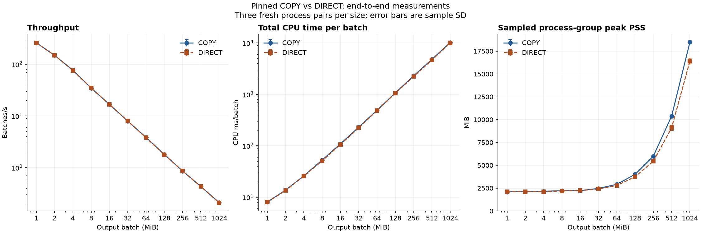
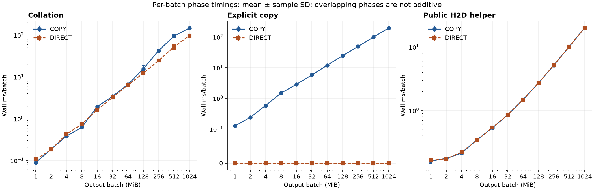

Direct allocations for collation¶
A reusable shared arena removes repeated transport allocation, but ordinary private collation can still allocate a batch and then copy it into that arena. When an operation supports an output buffer, produce the batch directly in a public reservation instead. This removes that explicit extra copy, not the required collation writes or every later transfer. Measure end-to-end throughput, CPU and memory before treating it as an optimization win.
Caller reservation interface¶
spdl.pipeline.SharedMemorySegmentPool provides reserve(),
recover(ticket) and discard(ticket). reserve() returns the public
spdl.pipeline.ArenaReservation interface; callers obtain it from the
pool rather than constructing internal endpoints. Its documented allocation and
seal methods can be used directly without importing the class. Allocate bytes
with allocate_bytes, create the typed output view in caller code, then publish
only the byte extent with seal(). Dtype, shape and other application metadata
travel beside the opaque ticket through ordinary IPC.
Only the handle’s read-only arena_id routing property is public. All other
implementation fields are private; do not inspect them or test the handle’s
implementation type. Ordinary standard-library pickle transports the opaque
handle without acquiring, releasing or consuming ownership. Copies still identify
the same one unit; they do not authorize repeated recovery or discard.
Producer PID receipts for OS telemetry come from ordinary initializer/envelope
os.getpid() values, not from the handle.
Create the pool in the parent, before spawning workers. pool.arena_id is a
constructor-initialized stable string: it remains the same in a spawned worker
and does not depend on opening a writer. Keep a parent mapping
pools = {pool.arena_id: pool for pool in worker_pools}, then route each received
ticket through pools[ticket.arena_id]. Worker assignment order can differ from
pool construction order; do not infer the owning pool from worker index or PID.
Collate into a public reservation¶
With SPDL IO and PyTorch installed, a CPU producer can write directly into a parent-created pool. For example:
import math
import torch
from spdl.pipeline import SharedMemorySegmentPool
def collate(parts, sequence, pool):
shape = (len(parts), *parts[0].shape)
dtype = parts[0].dtype
with pool.reserve() as unit:
data = unit.allocate_bytes(math.prod(shape) * parts[0].element_size())
out = torch.frombuffer(data.obj, dtype=dtype).reshape(shape)
torch.stack(parts, out=out)
ticket = unit.seal()
return ticket, {"shape": shape, "dtype": dtype, "sequence": sequence}
For concatenation along dimension zero, allocate the concatenated shape and use
torch.cat(parts, out=out). Use matching shape/dtype and an operation with a
real out parameter: copying a privately allocated result into out is the
copy control, not direct collation. Do not seal incomplete output or mutate a
sealed output. Keep unrelated payloads and reconstruction metadata outside the
arena. An exception before sealing aborts the reservation rather than publishing
a partially initialized batch.
The matched copy control is intentionally simple:
def collate_copy(parts, sequence, pool):
batch = torch.stack(parts) # Normal private collation allocation.
with pool.reserve() as unit:
data = unit.allocate_bytes(batch.numel() * batch.element_size())
out = torch.frombuffer(data.obj, dtype=batch.dtype).reshape(batch.shape)
out.copy_(batch) # The extra copy being compared.
ticket = unit.seal()
return ticket, {"shape": tuple(batch.shape), "dtype": batch.dtype,
"sequence": sequence}
Both arms should use the same source, collation operation, dtype, output shape, public process region, pool sizing, pinning, IPC and consumer. Comparing a public copy arm with a private direct executor or a different transport does not isolate this allocation choice.
Use ordinary public process regions¶
Pass precreated pools through the existing public
spdl.pipeline.defs.ProcessPoolExecutorConfig initializer/initargs.
Assign one pool per worker, not a shared writer cursor across workers. No
executor subclass, custom region decoder, queue wrapper or private SPDL API is
required. A small spawn-safe assignment counter can select the pool once:
import os
import torch
from spdl.pipeline import PipelineBuilder
from spdl.pipeline.defs import MAIN_PROCESS, ProcessPoolExecutorConfig
worker_pool = None
def initialize(worker_pools, counter, ready):
global worker_pool
torch.set_num_threads(1)
with counter.get_lock():
index = counter.value
counter.value += 1
worker_pool = worker_pools[len(worker_pools) - 1 - index]
ready.put((os.getpid(), worker_pool.arena_id))
def produce(sequence):
parts = [torch.full((16, 4096), sequence + i, dtype=torch.float32)
for i in range(4)]
return collate(parts, sequence, worker_pool)
def define_region(worker_pools, counter, ready):
executor = ProcessPoolExecutorConfig(
max_workers=len(worker_pools), mp_context="spawn", initializer=initialize,
initargs=(tuple(worker_pools), counter, ready))
return (PipelineBuilder().add_source(range(8))
.to(executor).pipe(produce).to(MAIN_PROCESS)
.add_sink(2).get_config())
This snippet shows placement, not resource ownership: its caller must already own the pools, assignment counter and initializer queue before building workers. Use top-level picklable functions and the usual main guard with spawn. The producer remains CPU-only; pool construction and CPU attachment must not initialize CUDA. The initializer queue reports PIDs through ordinary OS/public multiprocessing interfaces, not an internal worker-inspection hook.
The benchmark manages its own pools and cleanup. For your own pipeline, see Failure handling and ownership for when to close and unlink the pools.
Recover once, or discard unread once¶
Consume the received ticket with a recovery context. Calling pool.recover(ticket)
atomically claims that unit immediately, before context entry; do not create and
abandon a recovery context or create multiple contexts for one ticket.
For a CUDA consumer, select
its device, create both matched arms with pin_memory=True, and transfer
inside the context using the public synchronized helper:
from spdl.io import transfer_tensor_h2d
ticket, metadata = envelope
pool = pools[ticket.arena_id]
with pool.recover(ticket) as data:
actual_batch = torch.frombuffer(data.obj, dtype=metadata["dtype"]).reshape(
metadata["shape"])
gpu_batch = transfer_tensor_h2d(actual_batch, num_caches=0)
# The public helper completes H2D before returning.
# Use gpu_batch for real training/evaluation work.
del data, actual_batch
If a ticket has never been recovered and its output is not needed, call
pools[ticket.arena_id].discard(ticket) exactly once. For example, an application
that intentionally drops a queued output must discard that unread ticket rather
than just drop its metadata. Do not recover and discard the same ticket; do not
process pickle copies as distinct outputs. Keep the owning pool available until
outstanding tickets and outputs have been handled.
Context exit is not permission to overwrite still-live storage aliases. A retained tensor, detached view, storage object, NumPy base or external transfer hold can outlive the byte recovery context and postpone reuse. Release references promptly; budget pool capacity for queued units and retained aliases.
See Failure handling and ownership for the order of shutdown and storage cleanup.
Use the synchronized H2D helper for the example; raw nonblocking copies need their own source-lifetime and stream-completion handling. See Why shared arena outputs keep storage alive for storage lifetime and Shared-memory arenas for consumer pinning costs.
Sizing and prerequisites¶
Each data segment must fit the complete byte extent plus alignment.
Control and ticket bookkeeping use the separate precreated control backing, not
space inside a data segment. count * segment_size is the logical
data-mapping capacity of one worker’s pool. The benchmark’s
arena_capacity_bytes already sums the pools of all workers in one rank;
sum that field across ranks, not workers. These sizes exclude the small shared
control backing and are not observed residency. Leave host, shared-memory/tmpfs
and cgroup headroom. Pinned mappings can make the full capacity
resident; count must cover backpressure and consumer holds, not just sink size.
The example allows 4096 bytes beyond its one tensor; that is a workload choice,
not a universal overhead formula.
Native-backed pool views, including unpinned CPU views, require optional SPDL IO
buffer support. The generic public pipeline remains Python-only without this
storage path. CPU correctness checks use pin_memory=False and no H2D; they
are not performance evidence for a pinned CUDA consumer. Pinning is a consumer
policy, not a producer CUDA operation. Check actual returned is_pinned();
that alone does not prove a no-staging or pure-DMA claim.
Run and interpret the benchmark¶
benchmark_direct_output supplies real collation, epoch, isolated-trial
and repetition entrypoints. This OS-instrumented example requires POSIX for safe
worker-PID absence checks; RSS/PSS and worker CPU readings require Linux /proc
and remain null when unavailable. Its CLI compares both arms for every requested
size/dtype/cat-or-stack combination, rotating arm order across fresh spawned
consumer/worker repetitions. It launches local processes only, not infrastructure
jobs. In an appropriately provisioned CUDA environment:
python examples/benchmark_direct_output.py --sizes 1 8 64 \
--dtypes float16 float32 float64 uint8 --ops cat stack \
--workers 2 --parts 4 --rows 16 --slots 2 --batches 8 \
--runs 3 --repeats 3 --duration-sec 15 --source-commit SOURCE \
--output direct-allocation-results
For bounded local CPU correctness only:
python examples/benchmark_direct_output.py --self-test \
--source-commit SOURCE --output direct-allocation-cpu-check
Requested MiB round up to a complete shape for the selected dtype; use
actual_output_bytes, not the requested size, for byte rates. JSON retains
raw receipts, nulls, scope legend and grouped throughput mean/sample SD; CSV
keeps all metric columns in one row per trial with nested data serialized.
--output is a filename prefix; .json and .csv are appended even if
it contains dots. The CLI saves each completed trial to <prefix>.partial.jsonl
before starting the next. If a trial fails, the CLI stops with the original error
and leaves the checkpoint with the expected and completed trial counts. Treat it
as incomplete evidence, not a matched comparison. Use a fresh prefix if a
checkpoint already exists. The CLI removes the checkpoint only after writing
the complete report.
--timeout limits individual waits; --trial-timeout
sets a separate cooperative deadline for startup, warmup and measurement. On
expiry the consumer unwinds through its normal cleanup instead of being killed.
Native calls and cleanup can run past that deadline; it is not a hard process
kill timeout.
Caller source/build labels are not authentication of installed Python/native
source. Preserve exact-source package receipts and separately validate supported
Python versions before interpreting measurements.
Measurement scopes¶
Worker phases: generation includes the same actual fresh NumPy pattern and tensor conversion in both arms. Separate wall timers cover collation, explicit copy, reservation acquisition, output allocation and seal. Full verification is outside these phases. Direct’s explicit copy time is zero by construction, not an internal all-copies counter.
Ordinary IPC latency: main receipt time minus the producer’s post-seal
perf_countertimestamp on the same host. This includes pickle/transport, queueing, scheduling and consumer backpressure, not pure serialization time.Recovery and H2D: recovery measures the public recover call plus context entry. H2D measures the synchronized public helper’s host/completion wall time including traversal, pin checks and synchronization; no separate asynchronous submission or pure DMA timer is exposed. H2D is null when disabled, not measured zero.
Epochs: enclosing wall time includes fresh generation, collation, transport, recovery, full-value CPU/GPU verification and sampling. Setup, one complete checked warmup epoch and teardown are excluded. The excluded pinned warmup also verifies that public
pin_memory()preserves both tensor and storage pointers; this alias check is never run in measured phases. The throughput denominator is the sum of completed epochs, not the requested minimum enclosing duration. Concurrent phase times overlap; adding them is not a critical-path estimate.Total CPU time per batch: CPU time spent by the main consumer process and both producer workers in this comparison, divided by verified batches. The benchmark uses aligned
/procuser/system CPU snapshots for every initializer-reported worker around the enclosing measured window. CPU deltas are quantized to OS ticks and can include prefetch and between-epoch overhead. This is summed process CPU time, not elapsed time. Missing worker readings leave the worker and total CPU values unavailable.Memory: peak of sampled main-plus-all-worker RSS/PSS sums within each sampling interval, not the sum of independent process peaks. Reads within a sample are sequential, with their maximum span and complete sample counts reported, not an atomic snapshot. RSS double-counts shared mappings; PSS is proportional. Neither is cgroup memory, registered bytes or arena residency.
Repetitions: sample SD describes fresh-process repetitions in the same environment; it is null for one repetition and is not a confidence interval or evidence from independently allocated hosts.
Measured results¶

Absolute COPY and DIRECT results: throughput in batches/s, total CPU time in ms/batch, and sampled peak process-group PSS in MiB.¶

DIRECT relative to COPY. Zero means no change; positive values mean higher throughput or less CPU time per batch.¶

Collation, explicit copy, and synchronized H2D helper wall times in ms/batch. The H2D helper is not a pure DMA measurement, and overlapping phases cannot be added to estimate elapsed time.¶
See the Direct allocation benchmark results for the full table and measurement details. In that workload, direct collation removed an explicit copy and lowered sampled memory at large batch sizes without a consistent throughput win. Both arms used pinned output and timed H2D. Measure throughput and memory together on your workload rather than assuming that less copying makes the entire pipeline faster.
The measured value, pinning, H2D and worker-reap checks passed, but every trial log contains pool cancellation tracebacks, consistent with retiring prefetched work after measurement. The logs are not an exception-free shutdown attestation.
Failure handling and ownership¶
Keep the original pool handle in the caller. In cleanup, call its close()
before stopping and joining the pipeline. This wakes producers blocked in
reserve() and cancels pending arena work. Creator close is terminal: do not
start new reservations or recoveries afterward. Closing an attached or
unpickled handle affects only its local mappings; only the original creator
can unlink the shared names.
Confirm that all workers have exited and been reaped, and that recovery claims,
storage aliases, and any in-flight transfers no longer hold the backing memory.
Then retry the creator’s close() if needed and call unlink(). A normal
close() return can mean that retirement was deferred; unlink() raises
BufferError while mappings or registrations remain live. Unread tickets
remain allocated until explicitly discarded or retired by creator cleanup.
If cleanup fails or worker retirement is uncertain, retain the original pools, pipeline, and any worker-reporting resources, and report the cleanup failure without masking the original error. Do not force unlink or reset the pool. See Why shared arena outputs keep storage alive for the storage lifetime rules.